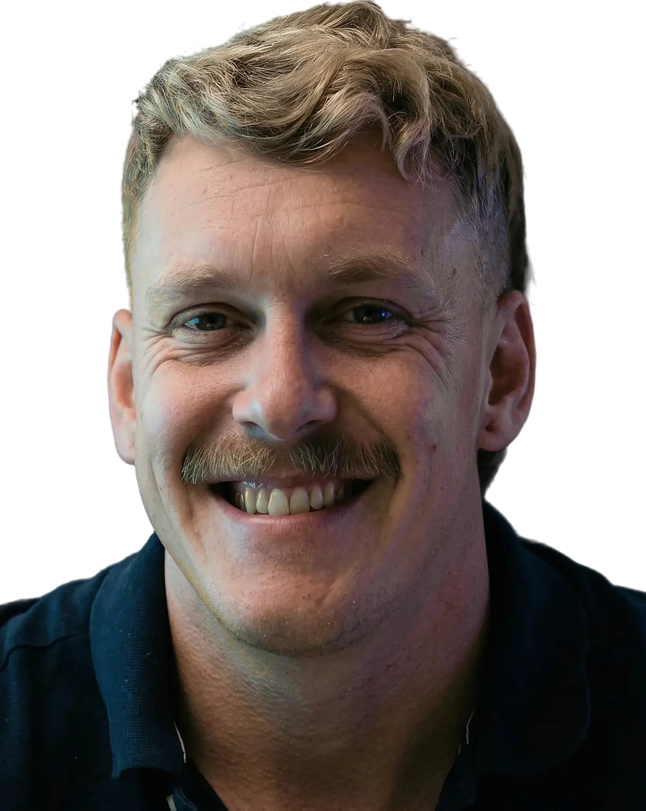

TomLarsson


Product engineer. TypeScript, React and C#/.NET, from data model to server.
Scroll
I build and run things myself, from data model to server
Moment 3 comes next
Product engineer. TypeScript, React and C#/.NET, from data model to server.
Scroll
I build and run things myself, from data model to server
Moment 3 comes next